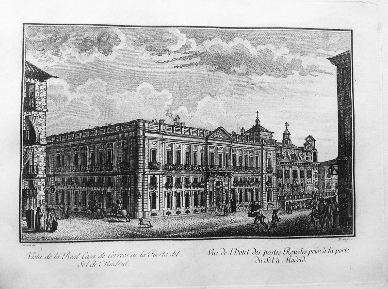
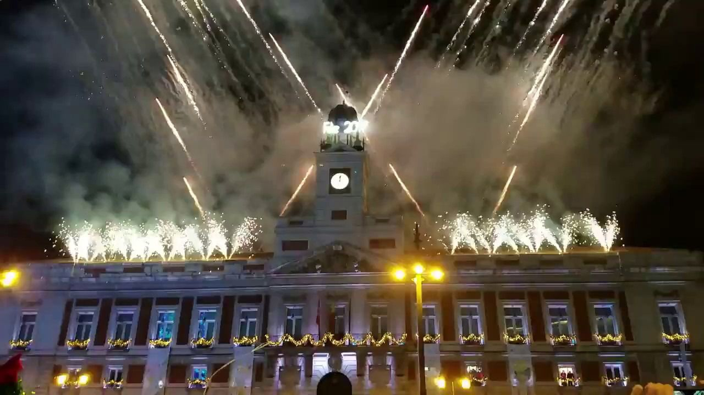

Real Casa de CorreosLa Real Casa de Correos es el edificio que preside la Puerta del Sol, siendo el edificio más grande de todos, así como el más antiguo, siendo construido en el año 1768.
Durante sus primeros 2 siglos de existencia su función fue la que indica su nombre, aunque ésta cambiaría varias veces más.
 La Real Casa en el siglo XIX
En 1855 se le añadió el reloj, aunque el actual data de 1866. Durante el franquismo, el edificio se usó para mantener el orden público y torturar opositores en sus calabozos.
Y por último, ya llegada la democracia, la Real Casa fue traspasada al gobierno autonómico, y desde entonces sirve como su sede.
La principal razón por la que el edificio es conocido en la actualidad es porque en Nochevieja se encarga de dar las campanadas y de desearnos un feliz año nuevo.
 La Real Casa dando las campanadas de año nuevo en 2018
Como curiosidad, este edificio protagonizó dos historias de fantasmas entre los siglos XVIII y XIX.
Durante la construcción del edificio, los obreros escucharon ruidos raros tras las paredes y una voz que decía "Debéis parar las obras, pues tal casa que estáis levantando pertenece al infierno, que para concebirla se ha llamado a un endemoniado arquitecto francés, despreciando la valía del buen amigo Ventura Rodríguez".
Los obreros se negaron a trabajar y tuvo que hacerse un exorcismo.
Más tarde, durante la invasión napoleónica, la Real Casa albergó a un destacamento militar. Cuando llegaron los españoles, estos militares fueron expulsados, pero al capitán nunca se le vio. Se dice que fue Lucifer quien le escondió en el reloj de la torre. Cuando el antiguo reloj fue desmontado, solo se encontraron la casaca del capitán y a un ratón.